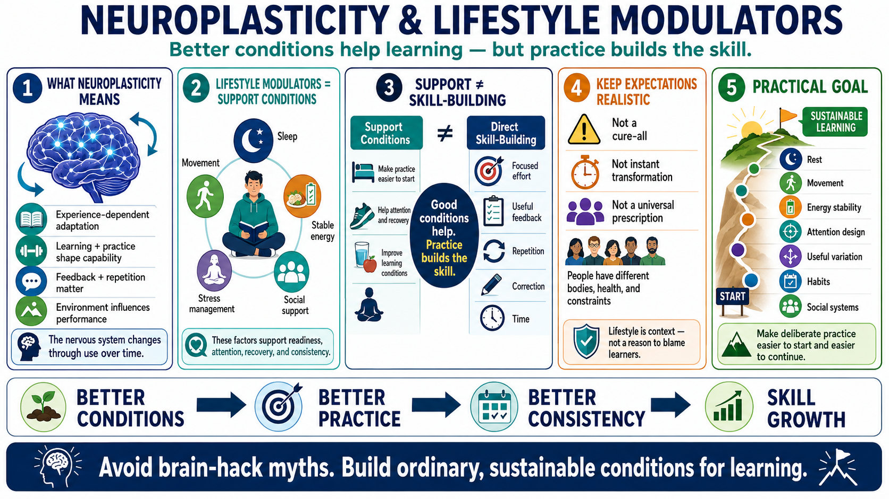

What Lifestyle Modulators Mean
Connecting to LMS... Progress: in progress

Narration
Neuroplasticity is experience-dependent adaptation in the nervous system. It helps explain why learning, practice, repeated behavior, feedback, and environment can shape capability over time. Lifestyle modulators are the surrounding conditions that can support or interfere with that process. They influence readiness to learn, attention, recovery, consistency, and behavior change, but they do not replace the work of practice.
A useful distinction is support condition versus direct skill-building. Sleep, movement, stable energy, stress management, and social support can make it easier to pay attention and return to practice. They can improve the conditions under which learning happens. But they do not magically install a skill. A person still needs focused effort, useful feedback, repetition, correction, and time.
This course keeps expectations realistic and non-clinical. Lifestyle factors can matter, but they are not a cure-all, a treatment plan, or a universal prescription. People have different bodies, responsibilities, constraints, health considerations, and support systems. Responsible learning design treats lifestyle as context, not as a reason to blame learners or promise instant transformation.
The practical goal is to create better conditions for deliberate practice and sustainable learning. That means avoiding brain hack claims and extreme self-optimization advice. Instead, we will look at ordinary, evidence-informed principles: rest, movement, energy stability, attention design, useful variation, habits, and social systems that make learning easier to start and easier to continue.